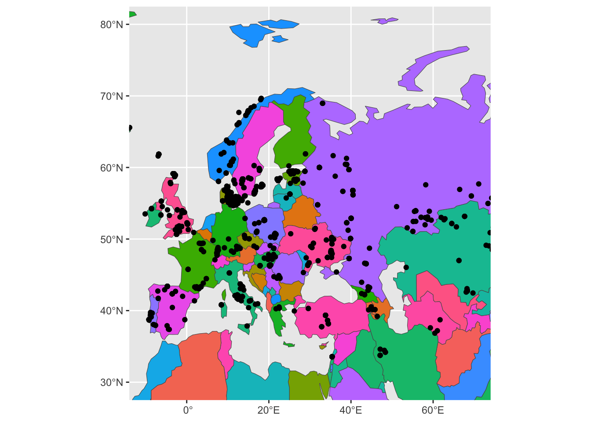

library(sf)Linking to GEOS 3.13.0, GDAL 3.8.5, PROJ 9.5.1; sf_use_s2() is TRUElibrary(rnaturalearth)Read spatial packages:
library(sf)Linking to GEOS 3.13.0, GDAL 3.8.5, PROJ 9.5.1; sf_use_s2() is TRUElibrary(rnaturalearth)Read other data analysis packages:
library(dplyr)
Attaching package: 'dplyr'The following objects are masked from 'package:stats':
filter, lagThe following objects are masked from 'package:base':
intersect, setdiff, setequal, unionlibrary(readr)
library(ggplot2)Read our pre-processed data:
source("scripts/ibd_utils.R")Read and process our IBD and metadata using our utility functions:
# download and process the metadata and IBD data set
metadata <- process_metadata(bin_step = 5000)Downloading and processing metadata...ibd_segments <- process_ibd()Downloading and processing IBD data...# combine the IBD table with metadata information
ibd_merged <- join_metadata(ibd_segments, metadata)Joining IBD data and metadata...Filter metadata to only individuals who have longitude and latitude values available (use filter(), !is.na() and the & operator):
metadata <- filter(metadata, !is.na(longitude) & !is.na(latitude))
head(metadata)# A tibble: 6 × 9
sample country continent age coverage longitude latitude hgYMajor age_bin
<chr> <chr> <chr> <dbl> <dbl> <dbl> <dbl> <chr> <fct>
1 baa01 South Afr… Africa 1908. 13.5 31.2 -29.5 A1b (0,500…
2 bab01 South Afr… Africa 2040. 1.30 31.2 -29.5 A1b (0,500…
3 I9133 South Afr… Africa 1970 2.08 18.5 -32.0 A1b (0,500…
4 I9028 South Afr… Africa 2103 1.19 18.0 -32.8 A1b (0,500…
5 I9134 South Afr… Africa 1198. 0.699 18.0 -32.8 <NA> (0,500…
6 ela01 South Afr… Africa 493 13.5 29.1 -28.9 <NA> (0,500…Use the function class() to check what kind of data type our metadata is (I know you know it’s a data frame, but let’s do this for practice):
class(metadata)[1] "tbl_df" "tbl" "data.frame"Use function st_as_sf() to convert the (non-spatially aware) data frame object into one that can be interpreted as spatial data. Save the result as a sf_metadata variable. What do you see when you type sf_metadata to your R console and when you run class() on that variable? Compare this to the output you got for the original metadata object. (You’ll probably get an error message, don’t worry and move along!)
sf_metadata <- st_as_sf(metadata, crs = "EPSG:4326")Error in st_sf(x, ..., agr = agr, sf_column_name = sf_column_name): no simple features geometry column presentThe above got you a rather cryptic error. Honestly, even I don’t understand it. But, here’s how you fix it: run st_as_sf(metadata, coords = c("longitude", "latitude")) instead.
Why do you think this is needed?
Hint: Although it’s easy to think that a table with columns “latitude” and “longitude” is obviously interpretable as spatial data, think about a situation in which the spatial coordinate columns in your data frame were called something else (like “lat” / “lon”, or “x” / “y”, or anything else).
When you have created the sf_metadata successfully, go back to the previous exercise.
sf_metadata <- st_as_sf(metadata, crs = "EPSG:4326", coords = c("longitude", "latitude"))
head(sf_metadata)Simple feature collection with 6 features and 7 fields
Geometry type: POINT
Dimension: XY
Bounding box: xmin: 17.95 ymin: -32.81 xmax: 31.22 ymax: -28.92
Geodetic CRS: WGS 84
# A tibble: 6 × 8
sample country continent age coverage hgYMajor age_bin
<chr> <chr> <chr> <dbl> <dbl> <chr> <fct>
1 baa01 South Africa Africa 1908. 13.5 A1b (0,5000]
2 bab01 South Africa Africa 2040. 1.30 A1b (0,5000]
3 I9133 South Africa Africa 1970 2.08 A1b (0,5000]
4 I9028 South Africa Africa 2103 1.19 A1b (0,5000]
5 I9134 South Africa Africa 1198. 0.699 <NA> (0,5000]
6 ela01 South Africa Africa 493 13.5 <NA> (0,5000]
# ℹ 1 more variable: geometry <POINT [°]>The result in sf_metadata looks almost like a data frame, right? What do you get when you run class(sf_metadata) again?
class(sf_metadata)[1] "sf" "tbl_df" "tbl" "data.frame"The st_as_sf() function converts a plain data frame into a “spatially annotated data frame”. Note the additional information about “Dimension”, and “CRS” (Coordinate Reference System “WGS 84”). Take a look at the Wikipedia article about WGS 84 and decipher what this could mean and why could this be needed.
Unlike tidyverse munging of data frames (where we introduced ggplot2 visualizations at the end), discussing spatial data is much easier to do the other way around, starting from a visualization.
It turns out that sf spatial data is basically a normal data frame with a little bit of extra annotation. This means two things:
All your tidyverse knowledge applies to spatial data just like it applied for “normal data frames”! We’ll practice a little bit about tidyverse in the context of spatial data later.
Not only that, but ggplot2 automatically supports plotting of spatial data points using a dedicated “geom” function geom_sf()!
As a reminder, the general pattern of plotting with ggplot2 was something like this:
ggplot(DATA_FRAME, aes(MAPPING AESTHETICS, LIKE COLOR ETC.)) +
geom_...()Try plotting your sf_metadata using the same pattern, but with a new geom_sf():
sf_metadata %>%
ggplot(aes(color = coverage)) +
geom_sf()
For simplicity and ease of plotting, use filter() to remove individuals in the metadata who are not from Europe, and save the result to a new variable sf_metadata_eur:
Hint: Remember that even spatial sf data is like any other data frame, and can therefore be transformed and filtered with every tidyverse function you already know (filter(), select(), etc.):**
sf_metadata_eur <- sf_metadata %>% filter(continent == "Europe")ggplot() +
geom_sf(data = sf_metadata_eur)
In the ggplot2 session you’ve learned about the possibility of visualizing multiple geoms in the same figure. This concept becomes even more powerful when visualizing spatial data. Consider the plot above—we know the points are from Europe because they form a roughly Europe-shaped cloud. But we want to add the outline of the European continent, to make the figure look much nicer.
Use the function ne_countries() (from the rnaturalearth R package) to download the spatial coordinates of the European continent. You can do this by setting its argument continent = "Europe". Save the result into the variable sf_countries:
sf_countries <- ne_countries(continent = "Europe")Let’s talk about data types which are possible for spatial data. When you type the sf_metadata into your R console again, you will see the column geometry. What is the data type of this column that you see when you apply the function glimpse() on the sf_metadata variable (remember, although it contains a spatial data object, it is actually still a data frame too!):**
glimpse(sf_metadata)Rows: 1,663
Columns: 8
$ sample <chr> "baa01", "bab01", "I9133", "I9028", "I9134", "ela01", "new01…
$ country <chr> "South Africa", "South Africa", "South Africa", "South Afric…
$ continent <chr> "Africa", "Africa", "Africa", "Africa", "Africa", "Africa", …
$ age <dbl> 1908.5, 2040.5, 1970.0, 2103.0, 1198.5, 493.0, 417.5, 378.0,…
$ coverage <dbl> 13.5002128, 1.2986543, 2.0755014, 1.1883686, 0.6993267, 13.4…
$ hgYMajor <chr> "A1b", "A1b", "A1b", "A1b", NA, NA, NA, NA, NA, "A0", "B2b",…
$ age_bin <fct> "(0,5000]", "(0,5000]", "(0,5000]", "(0,5000]", "(0,5000]", …
$ geometry <POINT [°]> POINT (31.22 -29.54), POINT (31.22 -29.54), POINT (18.…You see a geometry <POINT [°]> data type. This means that the sf_metadata table contains the geometrical objects which are of the type POINT—locations of individuals points in space. This is appropriate for locations of samples excavated (or sampled) at a particular location.
What do you get when you run glimpse() on the newly downloaded data set of the European continent in the sf_countries variable? To make the output a little smaller, apply glimpse() to the result %>% piped from `select(sf_countries, geometry):
select(sf_countries, geometry) %>% glimpseRows: 39
Columns: 1
$ geometry <MULTIPOLYGON [°]> MULTIPOLYGON (((178.7253 71..., MULTIPOLYGON (((…You see a data type geometry <MULTIPOLYGON [°]>. This is a more complex spatial geometry type. You might remember what a “polygon” is from school. A MULTIPOLYGON is simply a collection of polygons.
There are also other spatial data types. See this for a quick list of possible data types that you might encounter in doing spatial data analysis.
To recap the idea of combining multiple geoms on a single ggplot2 figure, let’s start just from visualizing a single geom, this time the (what should be) outlines the continents of the world. You can do this using geom_sf() in exactly the same way how you visualized the metadata, just using geom_sf(data = sf_countries) instead of geom_sf(data = sf_metadata):
ggplot() +
geom_sf(data = sf_countries)
The figure above works, but it looks very weird. We should probably restrict the geographic area of the world we’re plotting. For our data set, including “Kamchatka” in Europe for visualization purposes is pushing it a little bit.
For basic ggplot2 figures, we learned to use the xlim() function. This (and the ylim() function) operates on the Cartesian coordinates system. However, spatial data coordinates are not Cartesian. The world is a globe, and longitude / latitude coordinates (although they might be often written as plain x and y coordinates) have a different meaning. For that reason, ggplot2 provides a spatial-specific version of xlim() and ylim() in the coord_sf() function.
Restrict the geographical range of your spatial figure by adding the layer + coord_sf(xlim = c(-10, 70), ylim = c(30, 80)):
ggplot() +
geom_sf(data = sf_countries) +
coord_sf(xlim = c(-10, 70), ylim = c(35, 73))
Now add a new layer to the previous code which will plot the coordinates of our European spatial data points, using + geom_sf(data = sf_metadata_eur):
ggplot() +
geom_sf(data = sf_countries) +
geom_sf(data = sf_metadata_eur) +
coord_sf(xlim = c(-10, 70), ylim = c(30, 80))
Let’s map some aesthetics, to practice the concept of modifying the visual properties of a figure.
First, try setting aes(fill = name_en) in the geom_sf(data = sf_countries). The visuals will be a bit cluttered, so immediately add also a new layer + guides(fill = "none"):
ggplot() +
geom_sf(data = sf_countries, aes(fill = name_en)) +
geom_sf(data = sf_metadata_eur) +
coord_sf(xlim = c(-10, 70), ylim = c(30, 80)) +
guides(fill = "none")
Now try setting aes(color = country) in geom_sf(data = sf_metadata_eur) (and remove fill from geom_sf(data = sf_countries):
ggplot() +
geom_sf(data = sf_countries) +
geom_sf(data = sf_metadata_eur, aes(color = country)) +
coord_sf(xlim = c(-10, 70), ylim = c(30, 80)) +
guides(color = "none")
**In practice,